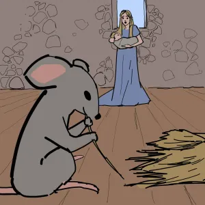

country invaded the land where a Queen ruled. The invader King captured the Queen and her baby daughter as prisoners. When he returned to his kingdom, he shut them both into the highest room of a tall tower. The room was very tiny and bare, with only one table and a very hard bed.
part 2
Then the enemy King sent for a fairy who lived near his kingdom. He nearly pushed the Fairy up the stairs to the Queen's room. The Fairy was touched by the sight of the Queen's miserable condition. When she kissed the Queen's hand, the Fairy whispered to her, "Courage, madam! I think I see a way to help you."
The Queen whispered her thanks. Then the wicked King cried harshly, "Silence!" He turned to the Fairy. "I brought you here for one reason and one reason only. Tell me this: Will this baby girl grow up to be a worthy bride for my son?"
The Fairy answered that indeed, the Princess would grow up to have all the graces, intelligence and charms that was in every way worthy of a throne. The old King growled to the Queen that it was lucky for them both that the Fairy had said it would be so. He would save the baby's life to become the future bride for his son. From the highest room of the tower the Fairy and Queen could hear the King's son shrieking and demanding that his servants do this and that from way down below, his mean voice carrying over all other voices and noises. The King thundered that if the Fairy had made a different forecast, both the baby and her mother would immediately have been hanged. Then he stamped off, taking the Fairy with him, and leaving the poor Queen in tears.
"How can I wish my little daughter to grow up, only to be married to that horrid King's son!" she cried. "And yet if she were ill-fated, we would both be doomed right now. If only I could hide her away somewhere, anywhere! There must be someplace safe where the cruel King could never find her." But where could the infant be hid, since they were both stuck in that tiny room at the top of the tower?
As the days went on, the Queen and the little Princess grew thinner and thinner. For every day, their hard-hearted jailer gave them only three boiled peas each to eat and a tiny morsel of black bread, so they were always terribly hungry. At last, one evening, as the Queen sat at her spinning-wheel - for she was also made to work day and night - she saw a tiny, pretty little mouse creep out of a hole. She said to the mouse, "Alas, little creature! Why are you coming here? We have only three peas each per day. So unless you wish to starve I'm afraid you must go elsewhere for your food."
part 3
But the mouse ran hither and thither, and danced and twirled so prettily, that the Queen clapped and laughed with joy. At last she gave the mouse her last pea, which she was keeping for her supper, saying, "Here, little one. I'm sorry I've nothing better to offer you. Your fine dancing deserves far more than this wrinkled little pea."
part 4
She had hardly spoken, when upon the table appeared a succulent roast partridge and two dishes of preserved fruit. Amazed was she! Quickly the Queen mashed a portion of the meat and fruit and spoon fed her baby, who licked each spoonful with glee. Then the Queen ate with great satisfaction herself, and offered what was left to the little mouse. The mouse danced even more charmingly than ever before.
The next morning the jailer brought the Queen and the Princess' daily allowance of three peas each, which he brought in upon a large dish to make them look even smaller. As soon as the jailer left, the Queen gave the mouse all three of her peas.
The empty dish was instantly covered with all sorts of wonderful things to eat, and the Queen shared a feast with her daughter once again. But afterwards, as she sat at her spinning-wheel, she began to worry that the fine meals could end any time, and even if they didn't, that her precious daughter was doomed to live as a prisoner, only to be forced to marry that horrid prince when she grew up.
The Queen despaired, "Oh! If only I could think of some way to save her!"

part 5
As she spoke, she noticed the little mouse playing in a corner with some long straws. The Queen began to braid the straws, thinking, "If I had but enough straws I could make a basket with them. Then if I let my baby down in the basket from the window, perhaps a kind passerby might take care of her and raise her in freedom."
By the time she had finished her thoughts, the little mouse had dragged in more and more straw, until the Queen had plenty to weave her basket. The Queen worked at it night while the little mouse danced for her. At lunch and supper time the Queen gave the mouse the three peas and the bit of black bread, and always found something scrumptious in their place. She really could not imagine where all these yummy dishes were coming from.
At last one day the basket was finished. The Queen was looking out of the window to see how long a cord she must make to lower the basket to the bottom of the tower, when she noticed a little old woman down below leaning on her stick and looking up at her. The old woman said, "I know your trouble, madam. If you like, I can help you."
part 6
"Oh, dear lady!" said the Queen. "If you really wish to be of use to me, you will come later at a certain time I will tell you, and I will let down my poor little baby in a basket. If you will take her and bring her up for me, when I'm rich and free again, I will reward you splendidly."
"I don't care about any reward," said the old woman. "And you can be sure your little daughter shall be well taken care of by me. But there is one thing I should like. You must know that I am very particular about what I eat. If there is one thing that I fancy above all else, it is a plump, tender little mouse. If there happens to be any mouse in your garret, just throw it down to me, that's all I ask."
Well, when the Queen heard this, she began to cry. The old woman, after waiting a few minutes, asked her what was the matter.
"Why," said the Queen, "There is only one mouse in this garret, and that is such a dear, sweet little thing that I cannot bear to think of it's being killed."
"What!" cried the old woman in a rage. "You care more for a miserable mouse than for your own baby? Good-bye, madam! I leave you to enjoy its company. For my own part I thank my stars that I can get plenty of mice without troubling the likes of you!"
That night when the Queen's baby was fast asleep, she packed it into the basket and wrote on a slip of paper, "Here is my beloved but unfortunate little baby girl. Please raise her with tenderness and love." This she pinned to the baby's robe. Very sadly she shut the basket. Just then, in sprang the little mouse.
part 7
"Ah, little one!" said the Queen. "It cost me dear today to save your life." Whereupon the Queen collapsed in a heap.
The Mouse answered, "Believe me, madam, you will never regret your kindness."
The Queen was immensely astonished when the Mouse began to speak. And still more so when she saw its little sharp nose turn to a charming face, and its paws become hands and feet. Then it suddenly grew tall, and the Queen recognized the Fairy who had come up to her tower room with the wicked King to visit her.
The Fairy smiled at her astonished look. Said the Fairy, "I wanted to see if you were capable of real friendship before I extended myself to help you. You see, we fairies are rich in everything but friends, and true friends are hard to find."
The Queen relied, rushing to her, "I cannot believe that you would lack for friends, you charming creature."
"Yet it is so," said the Fairy. "For many are only friendly with Fairies for their own advantage, and that I do not count at all. But when you protected the poor little mouse, you could not have known there was anything to be gained by it. To test you I took the form of the old woman whom you talked to from the window. I tempted you to forsake your little mouse friend. But this you did not do! Then I realized that you are indeed capable of true friendship."
Turning to the little Princess, the Fairy kissed her rosy lips three times. The Princess cooed and giggled.
"Dear little one," said the Fairy to the infant girl. "I am going to take you and your mother to my very own enchanted cottage, quite a distance from this wicked kingdom. There you both will be invisible to all others and you, sweet baby, will grow up safe and free, and will be together with your mother."
In an instant, the Fairy, the Queen, and her baby vanished from the tower prison room, never to return.